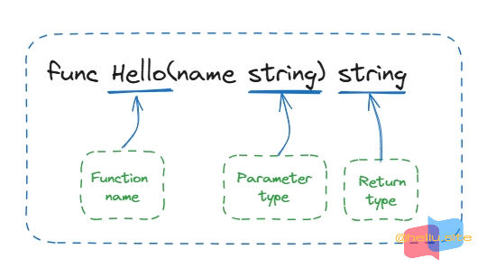

创建模块
- 在本教程中，您将创建两个模块。第一个是旨在由其他库或应用程序导入的库。第二个是调用者应用程序，它将使用第一个。
- 本教程的序列包括七个简短的主题，每个主题都说明了语言的不同部分：
- 创建一个模块 —— 编写一个小模块，其中包含可以从另一个模块调用的函数。
- 从另一个模块调用您的代码 —— 导入并使用您的新模块。
- 返回并处理错误 —— 添加简单的错误处理。
- 返回一个随机的问候 —— 在切片中处理数据（Go 的动态大小的数组）。
- 返回多人的问候 —— 在 map 中存储 键/值 对。
- 添加测试 —— 使用 Go 的内置单元测试功能来测试你的代码。
- 编译和安装应用程序 —— 在本地编译和安装你的代码。
启动一个其他人可以使用的模块
- 首先创建一个Go模块。在一个模块中，您为一组离散且有用的功能收集一个或多个相关包。例如，您可能会创建一个包含具有财务分析功能的包的模块，以便其他编写财务应用程序的人可以使用您的工作。有关开发模块的更多信息，请参阅 开发和发布模块。
- Go代码被分组到包中，包被分组到模块中。您的模块指定了运行代码所需的依赖项，包括 Go 版本和它所需的一组其他模块。
- 当您在模块中添加或改进功能时，您会发布模块的新版本。编写调用模块中函数的代码的开发人员可以导入模块的更新包并使用新版本进行测试，然后再将其投入生产使用。
- 打开命令提示符并cd到您的主目录：
- 在 Linux 或 Mac 上：
cd。 - 在 Windows 上：
cd %HOMEPATH%。
- 在 Linux 或 Mac 上：
- 为您的Go模块源代码 创建一个demo目录。
- 例如，从您的主目录使用以下命令：
mkdir greetings1 cd greetings1 - 打开命令提示符并cd到您的主目录：
- 使用go mod init命令启动您的模块。运行
go mod init命令，给它你的模块路径 —— 在这里，使用gitee.com/phpbms/greetings。 - 运行
go mod init命令，给它你的模块路径——在这里，使用gitee.com/phpbms/greetings。如果您发布一个模块，这必须是Go工具可以从中下载您的模块的路径。那将是您的代码存储库。有关使用模块路径命名模块的更多信息，请参阅 管理依赖项。
$ go mod init gitee.com/phpbms/greetings1
go: creating new go.mod: module gitee.com/phpbms/greetings1
- 目录结构：
|--greetings1/
|----go.mod # gitee.com/phpbms/greetings1
- 该
go mod init命令会创建一个go.mod文件来跟踪代码的依赖关系。到目前为止，该文件仅包含模块的名称和代码支持的Go版本。但是当您添加依赖项时，go.mod文件将列出您的代码所依赖的版本。这使构建保持可重复性，并使您可以直接控制要使用的模块版本。- 在您的文本编辑器中，创建一个用于编写代码的文件并将其命名为greetings.go。
- 将以下代码粘贴到您的greetings.go文件中并保存文件
package greetings1 import "fmt" // Hello returns a greeting for the named person. func Hello(name string) string { message := fmt.Sprintf("Hi, %v. Welcome!", name) return message } - 这是您的模块的第一个代码。它会向任何请求的呼叫者返回问候语。您将在下一步编写调用此函数的代码，在此代码中：
- 声明一个
greetings1包来收集相关功能。 - 实现一个
Hello函数来返回问候语。
- 声明一个
- 该函数接受一个
name类型为的参数string。该函数还返回一个string。在Go中，名称以大写字母开头的函数可以被不在同一个包中的函数调用。这在Go中称为导出名称。有关导出名称的更多信息，请参阅Go tour中的导出名称。

- 声明一个
message变量来保存你的问候，在Go中，:=运算符是在一行中声明和初始化变量的快捷方式（Go使用右侧的值来确定变量的类型）。从长远来看，您可能已将其写为：
var message string
message = fmt.Sprintf("Hi, %v. Welcome!", name)
- 目录结构：
|--greetings1/
|----go.mod # gitee.com/phpbms/greetings1
|----greetings.go # greetings1
从另一个模块调用您的代码
- 在(1)中，您创建了一个
greetings1模块。在本节中，您将编写代码来调用Hello您刚刚编写的模块中的函数。您将编写可以作为应用程序执行的代码，并调用greetings1模块中的代码。 hello为您的Go模块源代码 创建一个目录。这是你写你的调用者的地方。- 创建此目录后，您应该在层次结构的同一级别上同时拥有一个hello和一个greetings目录，如下所示：
<home>/
|-- greetings1/
|-- hello2/
- 例如，如果您的命令提示符位于greetings1目录中，您可以使用以下命令：
cd ..
mkdir hello2
cd hello2
- 为您要编写的代码启用依赖项跟踪，要为您的代码启用依赖项跟踪，请运行go mod init command，并为其提供您的代码所在的模块的名称。
- 出于本教程的目的，请使用
gitee.com/phpbms/hello2模块路径。
$ go mod init gitee.com/phpbms/hello2
go: creating new go.mod: module gitee.com/phpbms/hello2
- 在文本编辑器的hello2目录中，创建一个用于编写代码的文件并将其命名为hello.go。
- 编写代码来调用
Hello函数，然后打印函数的返回值
package main
import (
"fmt"
"gitee.com/phpbms/greetings1"
)
func main() {
message := greetings1.Hello("Gol")
fmt.Println(message)
}
- 目录结构：
|--greetings1/
|----go.mod # gitee.com/phpbms/greetings1
|----greetings.go # greetings1
|--hello2/
|----go.mod # gitee.com/phpbms/hello2
|----hello.go # main
-
在此代码中：
- 声明一个
main包。在Go中，作为应用程序执行的代码必须在main包中。 - 导入两个包：
gitee.com/phpbms/greetings1和fmt包。这使您的代码可以访问这些包中的函数。导入gitee.com/phpbms/greetings1（包含在您之前创建的模块中的包）使您可以访问该Hello功能。您还可import fmt，具有处理输入和输出文本的功能（例如将文本打印到控制台） greetings通过调用包的Hello函数 来获得问候。
- 声明一个
-
编辑
gitee.com/phpbms/greetings1模块以使用您的本地gitee.com/phpbms/greetings1模块。 -
对于生产用途，您
gitee.com/phpbms/greetings1将从其存储库发布模块（使用反映其发布位置的模块路径），Go 工具可以在其中找到它并下载它。目前，由于您尚未发布该模块，您需要调整该example.com/hello模块，以便它可以gitee.com/phpbms/greetings1在您的本地文件系统上找到代码。 -
为此，请使用go mod edit命令编辑
example.com/hello模块以将Go工具从其模块路径（模块所在的位置）重定向到本地目录（模块所在的位置）。- 在hello目录中的命令提示符下，运行以下命令：
- 【go mod edit -replace gitee.com/phpbms/greetings1=../greetings1】。
- 该命令指定
gitee.com/phpbms/greetings1应替换../greetings1为以定位依赖项。运行命令后， hello 目录中的 go.mod 文件应该包含一个replace指令：
module gitee.com/phpbms/hello2 go 1.16 replace gitee.com/phpbms/greetings1 => ../greetings1- 在hello目录下的命令提示符下，运行【go mod tidy】命令同步
gitee.com/phpbms/hello2模块的依赖，添加代码需要但模块中尚未跟踪的依赖。
$ go mod tidy -v go: found gitee.com/phpbms/greetings1 in gitee.com/phpbms/greetings1 v0.0.0-00010101000000-000000000000- 命令完成后，
gitee.com/phpbms/hello2模块的go.mod文件应如下所示：
module gitee.com/phpbms/hello2 go 1.16 replace gitee.com/phpbms/greetings1 => ../greetings1 require gitee.com/phpbms/greetings1 v0.0.0-00010101000000-000000000000 - 在hello目录中的命令提示符下，运行以下命令：
-
该命令在greetings1目录中找到了本地代码，然后添加了一个require指令来指定gitee.com/phpbms/hello2需要gitee.com/phpbms/greetings1。当您在hello.go中导入问候包时，您创建了此依赖项。
-
模块路径后面的数字是一个伪版本号 —— 一个生成的数字用来代替语义版本号（模块还没有），要引用已发布的模块，go.mod文件通常会省略
replace指令并使用require末尾带有标记版本号的指令。require gitee.com/phpbms/greetings1 v1.1.0。有关版本号的更多信息，请参阅模块版本编号。 -
在
hello目录中的命令提示符处，运行您的代码以确认其工作。
$ go run .
Hi, Gol. Welcome!
返回并处理错误
- 处理错误是可靠代码的基本特征。在本节中，您将添加一些代码来从
greetings1模块返回错误，然后在调用者中处理它。 - 在
greetings/greetings.go中，添加下面突出显示的代码，如果您不知道该向谁打招呼，则发送问候是没有意义的。如果名称为空，则向调用者返回错误。将以下代码复制到greetings.go并保存文件。
package greetings1
import (
"errors"
"fmt"
)
// Hello returns a greeting for the named person.
func Hello(name string) (string, error) {
if name == "" {
return "", errors.New("empty")
}
message := fmt.Sprintf("Hi, %v. Welcome!", name)
return message, nil
}
- 在此代码中：
- 更改函数，使其返回两个值：
a string和an error。您的调用者将检查第二个值以查看是否发生错误。（任何Go函数都可以返回多个值。有关更多信息，请参阅Effective Go。） - 导入Go标准库
errors包，以便您可以使用其errors.New功能。 - 添加
if语句以检查无效请求（名称应为空字符串），如果请求无效则返回错误。该errors.New函数返回一个error包含您的消息。 - 添加
nil（意味着没有错误）作为成功返回中的第二个值。这样，调用者就可以看到函数成功了。 - 在
hello2/hello.go文件中，处理Hello函数现在返回的错误以及非错误值。将以下代码粘贴到hello.go中。
- 更改函数，使其返回两个值：
package main
import (
"fmt"
"gitee.com/phpbms/greetings1"
"log"
)
func main() {
// Set properties of the predefined Logger, including
// the log entry prefix and a flag to disable printing
// the time, source file, and line number.
log.SetPrefix("greetings: ")
log.SetFlags(0)
// Request a greeting message.
message, err := greetings1.Hello("")
// If an error was returned, print it to the console and
// exit the program.
if err != nil {
log.Fatal(err)
}
// If no error was returned, print the returned message
// to the console.
fmt.Println(message)
}
- 在此代码中：
$ go run .
greetings: empty name
exit status 1
返回随机问候语句
- 在本节中，您将更改代码，以便不是每次都返回一个问候语，而是返回多个预定义的问候语消息之一。
- 为此，您将使用Go切片。切片类似于数组，不同之处在于它的大小会随着您添加和删除项目而动态变化。slice是Go最有用的类型之一。
- 您将添加一小部分来包含三个问候消息，然后让您的代码随机返回其中一个消息。有关切片的更多信息，请参阅Go博客中的Go切片。
- 在
greetings1/greetings.go中，更改您的代码，使其看起来如下所示。
package greetings1
import (
"errors"
"fmt"
"math/rand"
"time"
)
// Hello returns a greeting for the named person.
func Hello(name string) (string, error) {
if name == "" {
return "", errors.New("empty")
}
message := fmt.Sprintf(randomFormat(), name)
return message, nil
}
// init sets initial values for variables used in the function.
func init() {
rand.Seed(time.Now().UnixNano())
}
// randomFormat returns one of a set of greeting messages. The returned
// message is selected at random.
func randomFormat() string {
// A slice of message formats.
formats := []string{
"Hi, %v. Welcome!",
"Great to see you, %v!",
"Hail, %v! Well met!",
}
return formats[rand.Intn(len(formats))]
}
- 在此代码中：
- 添加一个
randomFormat函数，返回随机选择的问候消息格式。请注意，randomFormat以小写字母开头，使其只能由其自己的包中的代码访问（换句话说，它不会被导出）。 - 在中
randomFormat，声明一个formats具有三种消息格式的切片。当声明一个切片，你在括号忽略它的大小，像这样：[]string。这告诉 Go 切片底层数组的大小可以动态更改。 - 使用math/rand 包生成一个随机数，用于从切片中选择一个项目。
- 添加一个
init函数以rand使用当前时间为包做种子。Goinit在程序启动时自动执行函数，在全局变量初始化后。有关init函数的更多信息，请参阅 Effective Go。 - 在中
Hello，调用该randomFormat函数以获取您将返回的消息的格式，然后一起使用该格式和name值来创建该消息。 - 像以前一样返回消息（或错误）。
- 添加一个
- 在hello2/hello.go中，更改您的代码，使其看起来如下所示。您只是将Gladys的名字（或不同的名字，如果您喜欢）作为参数添加到
Hellohello.go中的函数调用中。
package main
import (
"fmt"
"gitee.com/phpbms/greetings1"
"log"
)
func main() {
// Set properties of the predefined Logger, including
// the log entry prefix and a flag to disable printing
// the time, source file, and line number.
log.SetPrefix("greetings: ")
log.SetFlags(0)
// Request a greeting message.
message, err := greetings1.Hello("Gla")
// If an error was returned, print it to the console and
// exit the program.
if err != nil {
log.Fatal(err)
}
// If no error was returned, print the returned message
// to the console.
fmt.Println(message)
}
- 在命令行的hello目录中，运行hello.go以确认代码有效。多次运行它，注意到问候语发生了变化。
$ hello go run .
Great to see you, Gla!
$ hello go run .
Great to see you, Gla!
$ hello go run .
Hi, Gla. Welcome!
回复多人问候
- 在您对模块代码所做的最后更改中，您将添加对在一个请求中为多人获取问候的支持。换句话说，您将处理多值输入，然后将该输入中的值与多值输出配对。为此，您需要将一组名称传递给一个可以为每个名称返回问候语的函数。
- 但有一个障碍。将
Hello函数的参数从单个名称更改为一组名称会更改函数的签名。如果您已经发布了example.com/greetings模块并且用户已经编写了调用 的代码Hello，那么这种更改会破坏他们的程序。 - 在这种情况下，更好的选择是编写一个具有不同名称的新函数。新函数将采用多个参数。这保留了旧功能以实现向后兼容性。
- 在greetings1/greetings.go中，更改您的代码，使其看起来如下所示。
package greetings1
import (
"errors"
"fmt"
"math/rand"
"time"
)
// Hello returns a greeting for the named person.
func Hello(name string) (string, error) {
if name == "" {
return "", errors.New("empty")
}
message := fmt.Sprintf(randomFormat(), name)
return message, nil
}
// init sets initial values for variables used in the function.
func init() {
rand.Seed(time.Now().UnixNano())
}
// randomFormat returns one of a set of greeting messages. The returned
// message is selected at random.
func randomFormat() string {
// A slice of message formats.
formats := []string{
"Hi, %v. Welcome!",
"Great to see you, %v!",
"Hail, %v! Well met!",
}
return formats[rand.Intn(len(formats))]
}
// Hellos returns a map that associates each of the named people
// with a greeting message.
func Hellos(names []string) (map[string]string, error) {
// A map to associate names with messages.
messages := make(map[string]string, len(names))
// Loop through the received slice of names, calling
// the Hello function to get a message for each name.
for _, name := range names {
message, err := Hello(name)
if err != nil {
return nil, err
}
// In the map, associate the retrieved message with
// the name.
messages[name] = message
}
return messages, nil
}
- 在此代码中：
- 添加一个
Hellos函数，其参数是一段名称而不是单个名称。此外，您将其返回类型之一从a更改string为a，map以便您可以返回映射到问候消息的名称。 - 让新
Hellos函数调用现有Hello函数。这有助于减少重复，同时保留两个功能。 - 创建
messages映射以将每个接收到的名称（作为键）与生成的消息（作为值）相关联。在Go中，您使用以下语法初始化map：您让函数将此映射返回给调用者。有关地图的更多信息，请参阅Go博客上的Go map实战。make(map[*key-type*]*value-type*) - 循环遍历您的函数收到的名称，检查每个名称是否具有非空值，然后将消息与每个名称关联。在此
for循环中，range返回两个值：循环中当前项目的索引和项目值的副本。您不需要索引，因此您使用 Go 空白标识符（下划线）来忽略它。有关更多信息，请参阅 Effective Go 中的空白标识符。
- 添加一个
- 在你的hello2/hello.go调用代码中，传递一段名称，然后打印你返回的名称/消息映射的内容。在hello.go中，更改您的代码，使其看起来如下所示。
package main
import (
"fmt"
"gitee.com/phpbms/greetings1"
"log"
)
func main() {
// Set properties of the predefined Logger, including
// the log entry prefix and a flag to disable printing
// the time, source file, and line number.
log.SetPrefix("greetings: ")
log.SetFlags(0)
names := []string{"Gladys", "Samantha", "Darrin"}
// Request a greeting message.
message, err := greetings1.Hellos(names)
// If an error was returned, print it to the console and
// exit the program.
if err != nil {
log.Fatal(err)
}
// If no error was returned, print the returned message
// to the console.
fmt.Println(message)
}
- 通过这些更改：
- 创建一个
names变量作为包含三个名称的切片类型。 - 将
names变量作为参数传递给Hellos函数。
- 创建一个
- 在命令行中，切换到包含hello/hello.go的目录，然后使用
go run来确认代码是否有效。输出应该是将名称与消息相关联的地图的字符串表示形式，如下所示：
$ go run .
map[Darrin:Hail, Darrin! Well met! Gladys:Hail, Gladys! Well met! Samantha:Hail, Samantha! Well met!]
添加测试
- 既然您已经将代码放到了一个稳定的位置（顺便说一句，做得很好），请添加一个测试。在开发期间测试您的代码可以暴露在您进行更改时发现的错误。在本主题中，您将为该
Hello函数添加一个测试 。 - Go 对单元测试的内置支持使您可以更轻松地进行测试。具体来说，使用命名约定、Go的
testing包和go test命令，您可以快速编写和执行测试。- 在 greetings1 目录中，创建一个名为greetings_test.go的文件。以_test.go结尾的文件名告诉
go test命令该文件包含测试函数。 - 在greetings_test.go中，粘贴以下代码并保存文件。
- 在 greetings1 目录中，创建一个名为greetings_test.go的文件。以_test.go结尾的文件名告诉
package greetings1
import (
"regexp"
"testing"
)
// TestHelloName calls greetings.Hello with a name, checking
// for a valid return value.
func TestHelloName(t *testing.T) {
name := "Gladys"
want := regexp.MustCompile(`\b`+name+`\b`)
msg, err := Hello("Gladys")
if !want.MatchString(msg) || err != nil {
t.Fatalf(`Hello("Gladys") = %q, %v, want match for %#q, nil`, msg, err, want)
}
}
// TestHelloEmpty calls greetings.Hello with an empty string,
// checking for an error.
func TestHelloEmpty(t *testing.T) {
msg, err := Hello("")
if msg != "" || err == nil {
t.Fatalf(`Hello("") = %q, %v, want "", error`, msg, err)
}
}
- 在此代码中：
- 在与您正在测试的代码相同的包中实现测试功能。
- 创建两个测试函数来测试
greetings.Hello函数。测试函数名称的形式为Test*Name*，其中Name表示特定测试的一些内容。此外，测试函数将指向包testing.T类型的指针作为参数。您可以使用此参数的方法来报告和记录您的测试。 - 实现两个测试：
TestHelloName调用该Hello函数，传递一个name值，该函数应该能够使用该值返回有效的响应消息。如果调用返回错误或意外响应消息（不包含您传入的名称的消息），则使用t参数的Fatalf将消息打印到控制台并结束执行。TestHelloEmpty``Hello用空字符串调用函数。此测试旨在确认您的错误处理工作正常。如果调用返回非空字符串或没有错误，则使用t参数的Fatalf方法将消息打印到控制台并结束执行。
- 在greetings目录下的命令行，运行go test命令执行测试，该
go test命令执行测试Test文件（名称以_test.go结尾）中的测试函数（名称以Test_开头）。您可以添加-v标志以获取列出所有测试及其结果的详细输出。测试应该通过。
$ go test
PASS
ok gitee.com/phpbms/greetings1 0.024s
$ go test -v
=== RUN TestHelloName
--- PASS: TestHelloName (0.00s)
=== RUN TestHelloEmpty
--- PASS: TestHelloEmpty (0.00s)
PASS
ok gitee.com/phpbms/greetings1 0.025s
- 中断
greetings.Hello函数以查看失败的测试。该TestHelloName测试功能检查您指定为名称的返回值Hello函数的参数。要查看失败的测试结果，请更改greetings.Hello函数使其不再包含名称。在greetings/greetings.go中，粘贴以下代码代替Hello函数。请注意，突出显示的行会更改函数返回的值，就好像name参数已被意外删除一样。
// Hello returns a greeting for the named person.
func Hello(name string) (string, error) {
// If no name was given, return an error with a message.
if name == "" {
return name, errors.New("empty name")
}
// Create a message using a random format.
// message := fmt.Sprintf(randomFormat(), name) // 这行替换了
message := fmt.Sprint(randomFormat())
return message, nil
}
- 在greetings目录下的命令行，运行
go test执行测试。这一次，在go test没有-v标志的情况下运行。输出将仅包含失败的测试的结果，这在您进行大量测试时非常有用。该TestHelloName测试将失败-TestHelloEmpty还通过。
$ go test -v
=== RUN TestHelloName
greetings_test.go:15: Hello("Gladys") = "Hail, %v! Well met!", <nil>, want match for `\bGladys\b`, nil
--- FAIL: TestHelloName (0.00s)
=== RUN TestHelloEmpty
--- PASS: TestHelloEmpty (0.00s)
FAIL
exit status 1
FAIL gitee.com/phpbms/greetings1 0.025s
编译并安装应用程序
- 在最后一个主题中，您将学习几个新
go命令。虽然该go run命令是在您进行频繁更改时编译和运行程序的有用快捷方式，但它不会生成二进制可执行文件。 - 本主题介绍了两个用于构建代码的附加命令：
- 该go build命令编译包及其依赖项，但不安装结果。
- 该go install命令编译并安装软件包。
例如，命令的输出可能是 将 Go 安装目录添加到系统的 shell 路径。这样，您就可以运行程序的可执行文件，而无需指定可执行文件的位置。 作为替代方案，如果您步骤如下
go build 命令将代码编译为可执行文件。hello 可执行文件以确认代码有效。请注意，根据您在测试后是否更改了greetings.go代码，您的结果可能会有所不同。$ ./hello
map[Darrin:Great to see you, Darrin! Gladys:Hail, Gladys! Well met! Samantha:Hail, Samantha! Well met!]
$ hello.exe
map[Darrin:Great to see you, Darrin! Gladys:Hail, Gladys! Well met! Samantha:Hail, Samantha! Well met!]
go命令将在其中安装当前包。您可以通过运行命令来发现安装路径， 如下例所示：go list -f '{{.Target}}'
/home/gopher/bin/hello，这意味着二进制文件安装到/home/gopher/bin。在下一步中您将需要此安装目录。
export PATH=$PATH:/path/to/your/install/directory
set PATH=%PATH%;C:\path\to\your\install\directory
$HOME/bin在 shell 路径中已经有一个目录 ，并且您想在那里安装 Go 程序，您可以通过GOBIN使用以下命令设置变量来 更改安装目标：go envgo env -w GOBIN=/path/to/your/bin
// or
go env -w GOBIN=C:\path\to\your\bin
go install命令来编译和安装包。go install
hello在其他目录中运行可执行文件名称。$ hello
map[Darrin:Hail, Darrin! Well met! Gladys:Great to see you, Gladys! Samantha:Hail, Samantha! Well met!]